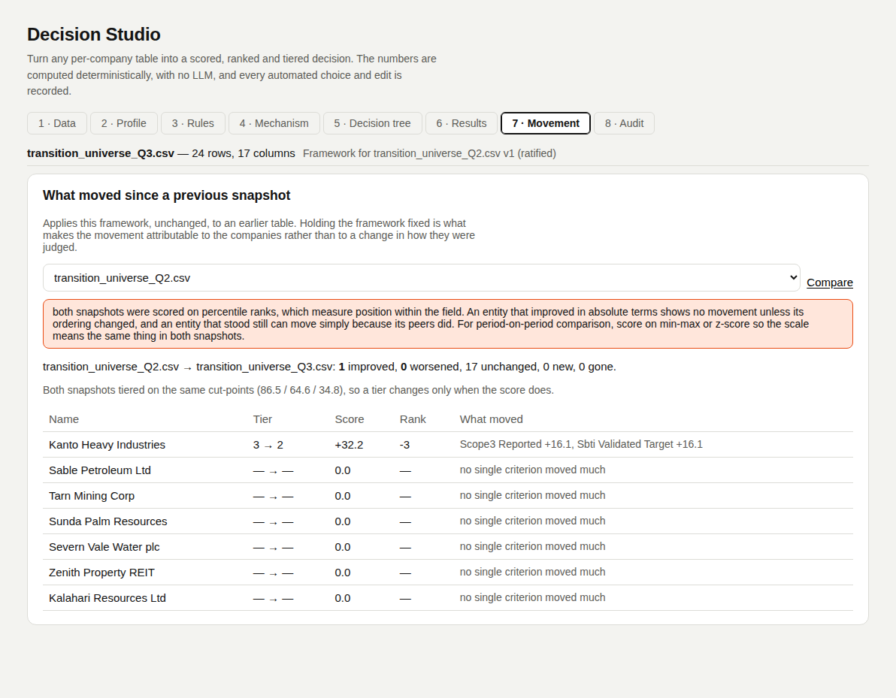

Movement
The engine computesApplies the same framework version, unchanged, to an earlier table. Holding the framework fixed makes any movement belong to the entities.
What it returns
| Output | Meaning |
|---|---|
| Counts | improved, worsened, unchanged, entered (new in this table), left (gone). |
| Per entity | tier, score, rank and status before and after, with the deltas. A negative tier change is an improvement. |
| Drivers | The criteria whose contribution moved most, largest first. |
Guards
| Situation | Result |
|---|---|
| Different framework or version on each side | Refused with the reason: the difference would describe the frameworks. |
| Percentile scores on both sides | Returned with a caveat: ranks show movement relative to the field, never absolute improvement. |
| Quantile or natural-break cut-points | The later table is tiered on the earlier table's cut-points, so a tier changes only when the score does. Cut-points drawn afresh would move with the field. |
| A move with no driver | Empty driver list: the shape of a data problem, not progress. |
For period-on-period work, score with min–max or z-score so the scores themselves mean the same in both tables.
In the tool
Screenshots of Decision Studio running on the sample table, taken with the app as it is on main.


Functions applied
What runs at this step, in order, with an example. Blue rows run on GoRules ZEN; the rest is Python in backend/arp/decision/.
| Function | Engine | Example |
|---|---|---|
compare_results | Python | Q3 table where Kanto now reports Scope 3 and has an SBTi target → Kanto Tier 3 → 2, score 39.8 → 72.0, drivers Scope3 Reported +16.1, Sbti Validated Target +16.1. |
hold_cuts | Python | The Q3 table is tiered on Q2's cut-points 86.5 / 64.6 / 34.8. Drawn afresh, Kanto's rise would move the middle cut to 71.0 and drop Ardent Pharma to Tier 3 on an unchanged 70.1 with no driver; held, Ardent stays in Tier 2 and only Kanto moves. The percentile caveat is returned. |
Code and formulas
The formula each function applies, and its source as it is in the repository.
hold_cutsbackend/arp/decision/compare.py:9–16cut_mode = absolute, pinned_cuts = cuts(before) for the later snapshot, unless the framework already pins its cuts.
Python source (8 lines)
def hold_cuts(config: MechanismConfig, before: DecisionResult) -> MechanismConfig:
"""The framework with the earlier snapshot's cut-points pinned, for
scoring the later one. Quantile or natural-break cuts drawn afresh move
with the field, so an entity whose score stood still could change tier
with no criterion behind it. Fixed cut-points are left as they are."""
if before.cuts_origin == "absolute":
return config
return config.model_copy(update={"cut_mode": "absolute", "pinned_cuts": list(before.effective_cuts)})compare_resultsbackend/arp/decision/compare.py:19–111Refused unless both results carry the same framework id and version. Then per entity: tier, score and rank before, after and delta.
Python source (93 lines)
def compare_results(
before: DecisionResult,
after: DecisionResult,
*,
label_before: str = "before",
label_after: str = "after",
) -> DecisionComparison:
"""The same framework applied to two snapshots, and what moved.
Only meaningful with the framework version pinned on both sides: a
tier change under two different frameworks says nothing about the
company, only about the frameworks. That is checked rather than
assumed, and a mismatch is reported instead of quietly compared.
"""
comparable = before.framework_id == after.framework_id and before.framework_version == after.framework_version
reason = None
if not comparable:
reason = (
f"scored under different frameworks ({before.framework_id} v{before.framework_version} vs. "
f"{after.framework_id} v{after.framework_version}) -- any movement shown is a difference between the "
"frameworks as much as a change in the entities"
)
before_by_key = {e.entity_key: e for e in before.entities}
after_by_key = {e.entity_key: e for e in after.entities}
movements: list[EntityMovement] = []
improved = worsened = unchanged = 0
for key, new in after_by_key.items():
old = before_by_key.get(key)
if old is None:
continue
tier_delta = (new.tier - old.tier) if (new.tier is not None and old.tier is not None) else None
if tier_delta is not None:
if tier_delta < 0:
improved += 1
elif tier_delta > 0:
worsened += 1
else:
unchanged += 1
movements.append(
EntityMovement(
entity_key=key,
name=new.name,
tier_before=old.tier,
tier_after=new.tier,
tier_delta=tier_delta,
score_before=old.score,
score_after=new.score,
score_delta=(new.score - old.score) if (new.score is not None and old.score is not None) else None,
rank_before=old.rank,
rank_after=new.rank,
rank_delta=(new.rank - old.rank) if (new.rank is not None and old.rank is not None) else None,
status_before=old.status,
status_after=new.status,
drivers=_drivers(old, new),
)
)
caveat = None
if before.norm == "percentile" and after.norm == "percentile":
caveat = (
"both snapshots were scored on percentile ranks, which measure position within the field. An entity "
"that improved in absolute terms shows no movement unless its ordering changed, and an entity that "
"stood still can move simply because its peers did. For period-on-period comparison, score on min-max "
"or z-score so the scale means the same thing in both snapshots."
)
cuts_moved = None
if before.effective_cuts != after.effective_cuts:
cuts_moved = (
f"the cut-points moved from {' / '.join(f'{c:.1f}' for c in before.effective_cuts)} to "
f"{' / '.join(f'{c:.1f}' for c in after.effective_cuts)}, so a tier can change on an unchanged score"
)
movements.sort(key=lambda m: (-(abs(m.score_delta) if m.score_delta is not None else -1)))
return DecisionComparison(
framework_id=after.framework_id,
framework_version=after.framework_version,
label_before=label_before,
label_after=label_after,
improved=improved,
worsened=worsened,
unchanged=unchanged,
entered=len([k for k in after_by_key if k not in before_by_key]),
left=len([k for k in before_by_key if k not in after_by_key]),
movements=movements,
comparable=comparable,
incomparable_reason=reason,
caveat=caveat,
cut_points=list(after.effective_cuts),
cuts_moved=cuts_moved,
)_driversbackend/arp/decision/compare.py:114–128Δcontributionⱼ = contributionⱼ(after) − contributionⱼ(before); criteria with |Δ| ≥ 0.5, largest first.
Python source (15 lines)
def _drivers(old, new) -> list[str]:
"""Which criteria actually moved the score. A tier change with no named
driver is the shape of a data problem, not of progress, and the list
being empty says so."""
before_by_column = {c.column: c for c in old.contributions}
deltas: list[tuple[float, str]] = []
for contribution in new.contributions:
previous = before_by_column.get(contribution.column)
if previous is None or previous.normalised is None or contribution.normalised is None:
continue
delta = contribution.contribution - previous.contribution
if abs(delta) >= 0.5:
deltas.append((abs(delta), f"{pretty(contribution.column)} {'+' if delta > 0 else ''}{delta:.1f}"))
deltas.sort(key=lambda d: -d[0])
return [label for _, label in deltas[:_MAX_DRIVERS]]